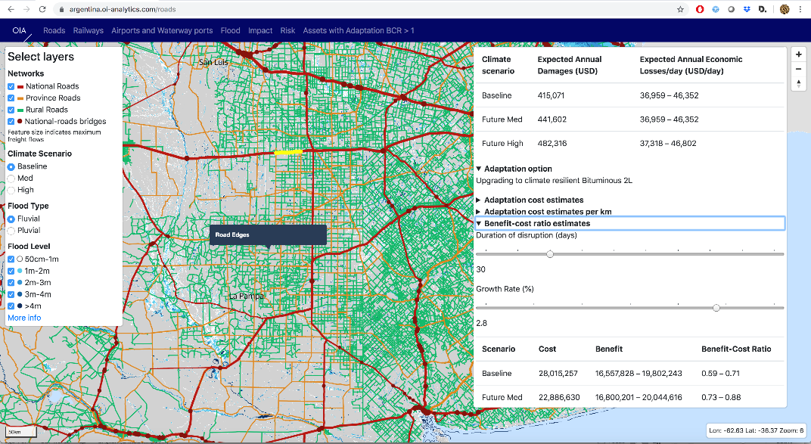

This mini-lecture looks towards future innovations in infrastructure systems analysis, which can be expected in the coming years. We also consider the potential for more widespread uptake of the datasets and tools that have been provided in this course.
This lecture series has described the state-of-the-art in infrastructure systems modelling. We have reviewed methods for system analysis and risk assessment. This is a very exciting time because of the combination of new data sources, computational methods and digital platforms that are providing universal access to new tools and datasets. These innovations will continue at pace in the future. However, there are still gaps in knowledge that will not be immediately filled by technological innovation. Local contextual knowledge and expertise continue to be essential ingredients for sustainable infrastructure decision making.
New data sources are revolutionising our capacity for infrastructure systems analysis. Three notable examples are:
OpenStreetMap (OSM) provides global data on the location of roads. The transport network risk analysis that we have described in this course (see also Koks et al. (2019)) makes extensive use of OSM, though it is supplemented with other local data. OSM is not necessarily complete and is not a topologically correct network, but it provides a good starting point for any land transport infrastructure analysis.
Nighttime light data from satellite observations on clear nights has been widely used to estimate the spatial distribution of the use of electricity services, as well as many other factors associated with spatial economic development. Nighttime light data provides a valuable snapshot of electricity use, especially in inaccessible places where electricity use data may not be completely reported.
The Automatic Identification System (AIS) is a satellite tracking system for all large ships. AIS data has enabled us to track ship movements worldwide (Verschuur, Koks, and Hall 2020) and monitor the impacts of extreme climatic events at ports.
New data sources are continuing to become available thanks to high resolution satellite observations, crowd sourcing of data, social media platforms and natural language processing of written documents. We can expect further rapid innovations in the near future, which will continue to revolutionise our capacity for infrastructure systems analysis anywhere on Earth.
Analysis of large complex infrastructure systems has been made possible thanks to increasing computing capacity. Some aspects of systems analysis that have been described in this lecture series, notably for climate risk analysis, require large numbers of computations to evaluate many different scenarios. We have explored the use of optimisation methods, which are also computationally expensive.
As we all know, there is ever-increasing computational capacity, which is widely accessible thanks to cloud computing facilities. We foresee these advances continuing in the future, so computational resources are unlikely to be the main constraint on our analysis capabilities. The greater challenge comes from the need to write dependable code to do analysis of complex systems, which is verified and validated. The move towards open-source code helps to ensure that systems analysis is open to scrutiny and widely available.
Infrastructure systems analysis is being made available through decision support platforms. In this course we have introduced the National Infrastructure Systems MODel (NISMOD) platform, which supports sustainable and resilient infrastructure provision. These platforms are increasingly accessible, including through web applications. The figure below (Figure 20.3.1) provides an example of the NISMOD interface for transport network vulnerability analysis in Argentina, which identified hotspots of infrastructure vulnerability and helps to prioritise adaptation actions. In the future we will be providing a global platform for infrastructure risk analysis and adaptation prioritisation, based on analysis of globally available datasets. This will provide a starting point for more in-depth analysis, supplemented with locally obtained data, anywhere on Earth.

Figure 20.3.1: Example of the NISMOD interface for transport network vulnerability analysis in Argentina
New datasets, computational tools and decision support platforms are providing wider access to advanced analytics to support infrastructure decision-making. However, using these platforms requires technical capacity within infrastructure organisations, in government departments and agencies, and the private sector. We have found that having government organisations with a mandate for sustainable infrastructure and capable staff is essential for achieving effective infrastructure systems planning and implementation. We refer to that as the ‘enabling environment’ which was discussed in Lecture Block 19. Being able to use data and tools for infrastructure systems analysis requires some capacity for geospatial analysis, and ideally also a high-level programming language. More senior executives do not necessarily need these skills, but they need to understand the principles of infrastructure systems analysis and the relationship with decision-making, as described in this course.
The aim of this course has been to promote knowledge and uptake of methods for infrastructure systems analysis in support of sustainable and resilient infrastructure. These types of analyses are rapidly becoming more feasible thanks to a revolution in the accessibility of relevant datasets. New analytical tools, which are enabled by rapid advances in computing power, are becoming embedded in decision support tools that assist with infrastructure prioritisation and risk analysis. Use of these capabilities requires on human capacity and a mandate for sustainable infrastructure within relevant organisations.